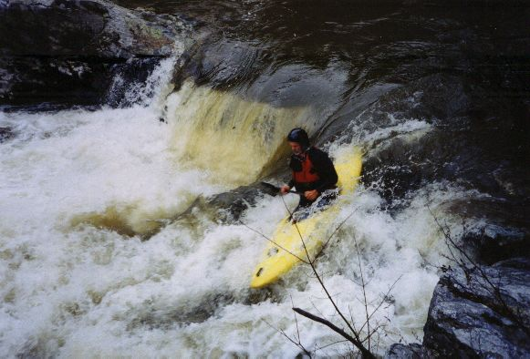
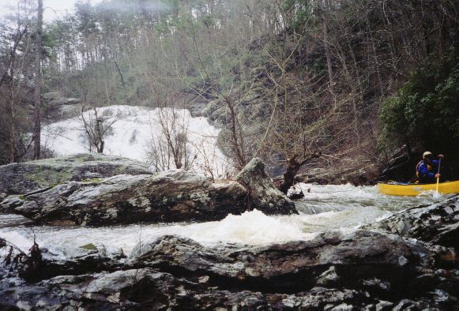
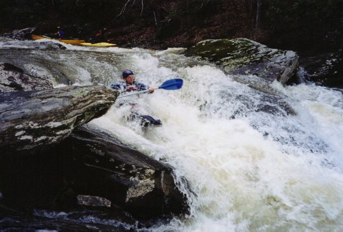
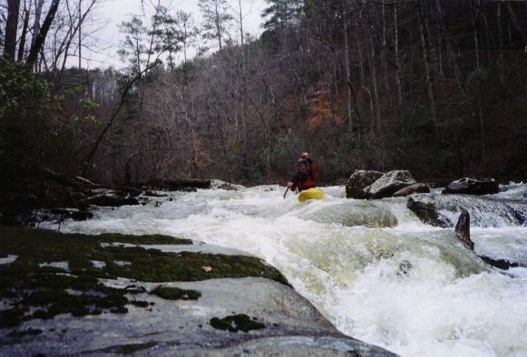

|  | Gary Holder on the drop just above Salt Creek Falls |
|  | Dave B. catches an eddy below the falls |
|  | Kevin Cunningham on the biggest drop below the falls |
|
Will Reeves in the same drop at a bit lower water, photo by P. Scott Zink. |
|  | Gary at the end of a longer rapid |